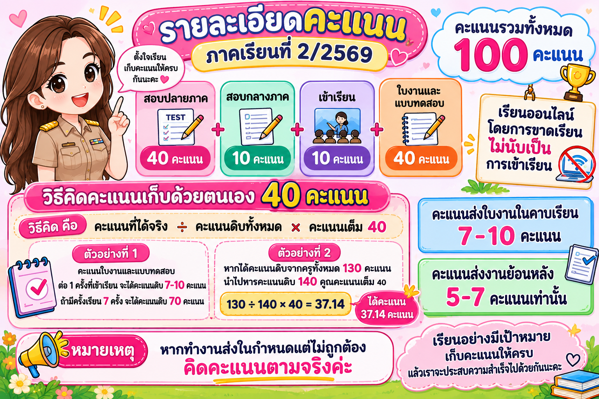

กำลังตรวจสอบสถานะระบบ
กรุณารอสักครู่ ระบบกำลังเชื่อมต่อข้อมูลล่าสุดจากฐานข้อมูลกลาง...
กรุณารอสักครู่ ระบบกำลังเชื่อมต่อข้อมูลล่าสุดจากฐานข้อมูลกลาง...
ศูนย์การเรียนชุมชน • ปีการศึกษา 2569 ภาคเรียนที่ 2
ขณะนี้คุณครูกำลังปรับปรุงและอัปเดตข้อมูลระบบห้องเรียนออนไลน์ เพื่อป้องกันข้อมูลคลาดเคลื่อน กรุณารอสักครู่แล้วกลับมาใช้งานใหม่อีกครั้งครับ
ปีการศึกษา 2569 · ภาคเรียนที่ 2
ระบบการเรียนรู้ครบวงจร เช็คชื่อเข้าเรียนอัตโนมัติ ศึกษาเนื้อหาและอินโฟกราฟิก เล่นเกมจับคู่ทบทวนความรู้ ทำใบงาน และทำแบบทดสอบออนไลน์พร้อมตรวจผลคะแนนได้ทันที
ยินดีต้อนรับนักศึกษา ศรช.
เรียนรู้ได้ทุกที่ ทุกเวลา
ศูนย์การเรียนชุมชน
ครบครันทั้ง 7 รายวิชา ระดับ ม.ต้น และ ม.ปลาย บันทึกคะแนนเข้าสู่ระบบคลาวด์อัตโนมัติ

ประชาสัมพันธ์ภาคเรียนที่ 2/2569
ศูนย์การเรียนชุมชน
ยินดีต้อนรับนักศึกษา ศรช. ปีการศึกษา 2569 ภาคเรียนที่ 2 ติดตามข่าวสารและกำหนดการเรียนได้ที่นี่ครับ กรุณาเข้าเรียนตามรายวิชาที่เปิดสอน อ่านเนื้อหา เล่นเกมจับคู่ความรู้ พิมพ์ตอบใบงานด้วยตนเอง และทำแบบทดสอบให้ครบถ้วน
เลือกหมวดระดับชั้นของนักศึกษาเพื่อดูรายวิชาและครั้งที่เปิดสอน
กรอกรหัสนักศึกษาเพื่อเช็คชื่อเข้าเรียนอัตโนมัติ
บังคับอ่านหน้านี้อย่างน้อย 10 วินาที ก่อนเปิดหน้าถัดไป
ภารกิจบังคับก่อนทำใบงาน (ไม่สามารถกดข้ามได้)
สวัสดีนักศึกษาทุกคน ให้นักศึกษาอ่านโจทย์และพิมพ์คำตอบใบงานด้วยตนเองลงในช่องข้อความใต้แต่ละข้อได้เลยครับ
เข้าสู่ระบบด้วยรหัสนักศึกษา (รหัสผ่านคือรหัสเดียวกัน)
ปัดซ้าย-ขวาบนตารางเพื่อดูข้อมูลทั้งหมด
| วิชา / ครั้งที่ | เช็คชื่อ | คะแนนสอบ (10) | ใบงาน (10) | คำแนะนำจากครู |
|---|
ปัดซ้าย-ขวาบนตารางเพื่อดูข้อมูลทั้งหมด
| รหัสวิชา / รายวิชา | คะแนนเก็บดิบ | คะแนนรวมปลายภาค (40) | ผลการประเมิน |
|---|
ระบุรหัสผ่านประจำตัวเพื่อเข้าใช้งาน
เช็คชื่อ ตรวจใบงาน และดูคะแนนนักศึกษา
รายการส่งงานทั้งหมด
0
ใบงานที่รอครูตรวจ
0
สถานะเว็บไซต์
เปิดใช้งานปกติ
ปัดซ้าย-ขวาบนตารางเพื่อดูข้อมูลทั้งหมด
| รหัส / ผู้เรียน | วิชา / ครั้งที่ | เช็คชื่อเมื่อ | สอบ (10) | ใบงาน (10) | รวม (20) | การตรวจงาน |
|---|
แสดงเฉพาะนักศึกษาที่ส่งคำตอบใบงานแล้ว และรอคุณครูให้คะแนน
| รหัส / ผู้เรียน | วิชา / ครั้งที่ | ส่งเมื่อ | จัดการ |
|---|
เลือกรายชื่อนักศึกษาหรือกรอกรหัส เพื่อบันทึกคะแนนเข้าเรียนรวมทั้งเทอม (ไม่แยกรายวิชา)
| รหัส / ชื่อนักศึกษา | คะแนนเข้าเรียนทั้งเทอม | แก้ไข |
|---|
บันทึกคะแนนสำหรับนักศึกษาที่เข้าเรียนในชั้นเรียนกับครู (นำไปคำนวณเหมือนใบงานและแบบทดสอบ)
อย่าลืมเก็บคะแนน กพช.!
(คลิกพื้นที่ว่างเพื่อปิดหน้าต่าง)